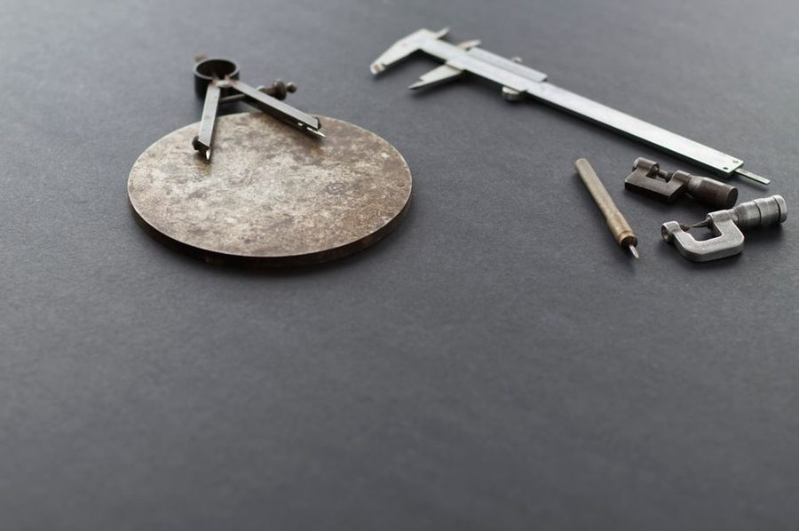

Rev. 2 · 13 mai · leitura de 5 minutos
Trena, fita metrica e paquimetro: quando cada um serve
Trena mede vao. Paquimetro mede peça. Trocar os dois de lugar produz erro garantido nas duas pontas.

Medir parece trivial ate a peça nao encaixar. Cada instrumento tem uma faixa util, e usar o errado introduz um erro que nenhuma habilidade de corte corrige depois.
Trena metalica
E o instrumento de vao e de peça grande. A ponta metalica tem folga de proposito: ela desliza exatamente a espessura da propria chapinha, para que a leitura seja igual empurrando (medida interna) ou puxando (medida externa). Ponta amassada elimina essa compensacao e produz erro constante.
Ao medir vaos, mantenha a fita reta e apoiada; barriga na fita alonga a leitura. Em vaos maiores que dois metros, medir com ajuda de outra pessoa ou apoiar a fita no piso e mais confiavel do que estica-la no ar.
Fita metrica de costura
Serve para contorno, curva e circunferencia, onde a trena rigida nao acompanha. Nao serve para cota de corte: ela estica com o tempo e com a forca aplicada, e dois a tres milimetros de variacao sao comuns numa fita velha.
Um teste rapido de fita: estenda-a ao lado de uma trena e compare a marcacao de um metro. Se houver diferenca visivel, a fita ja perdeu a referencia e serve so para uso aproximado.
Paquimetro
E o instrumento de peça pequena e de espessura: diametro de broca, espessura de chapa, profundidade de rasgo, diametro interno de tubo. Ele le decimos de milimetro, faixa em que trena nao tem resolucao nenhuma.
Uso pratico mais comum em casa: conferir o diametro real de uma bucha, de um parafuso ou a espessura de uma chapa antes de comprar a broca. Uma leitura de trinta segundos evita a viagem extra a loja.
Esquadro combinado e nivel
O esquadro combinado mede angulo e profundidade e serve como guia de risco paralelo a borda. O nivel de bolha nao mede distancia, mas define a referencia horizontal a partir da qual as distancias fazem sentido em movel e prateleira.
Instrumento digital (nivel a laser, trena a laser) e util em vao grande e em marcacao de altura repetida na parede. Em peça pequena, a leitura a laser sofre com superficie irregular e o metodo tradicional continua mais confiavel.
Cuidados que preservam a leitura
Guarde a trena limpa e sem areia na fita, nao deixe o paquimetro fechar sobre sujeira e evite deixar qualquer instrumento no chao da oficina. Instrumento que caiu deve ser conferido antes do proximo trabalho: uma queda desregula esquadro e paquimetro com facilidade.
Este texto e revisado quando a pratica mostra que a recomendacao nao se sustenta. A revisao vigente esta indicada no topo da folha.